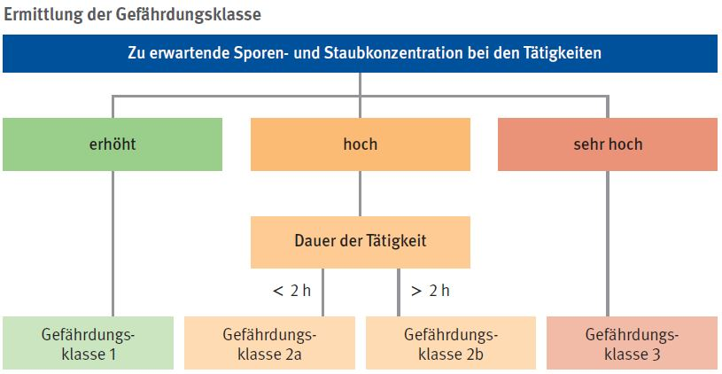

Bei Abbruch-, Sanierungs-, Instandhaltungs- und Umbauarbeiten an Gebäuden können die Beschäftigten in Kontakt zu Biostoffen, z. B. Schimmelpilzen, Bakterien oder Fäkalkeimen, kommen.
Schimmelpilze können sensibilisierend auf die Atemwege wirken und in Folge allergische Reaktionen auslösen.
Schimmelpilze können im Rahmen ihres Stoffwechsels toxische Stoffe (Mykotoxine) bilden. Mykotoxine können sich in den Baustoffen anreichern und werden insbesondere bei staubintensiven Tätigkeiten (z. B. Abstemmen, Fräsen ohne Absaugung) freigesetzt.
Sensibilisierende und toxische Wirkungen werden sowohl von vitalen als auch abgestorbenen Schimmelpilzen verursacht.
Das Infektionsrisiko durch Schimmelpilze ist bei der Gebäudesanierung von nachrangiger Bedeutung.
Allgemeines
Bei einem Schimmelpilzbefall können auch weitere Biostoffe wie z. B. Bakterien (Aktinomyzeten) und Milben vorhanden sein, die ebenfalls allergische Reaktionen verursachen können.
Bei Schimmelpilzwachstum infolge von z. B. Leckagen in Schmutzwasserleitungen oder nach Hochwasserereignissen sind auch Gefährdungen durch Fäkalkeime (Infektionserreger) und Parasiten zu berücksichtigen.
Eine Aufnahme der Stoffe in den Körper kann über die Atemwege (Einatmen von Stäuben und Aerosolen), über die Haut oder Schleimhäute (z. B. über Verletzungen der Haut oder aufgeweichte Haut bei Feuchtarbeit) oder den Mund erfolgen.
Die Gefährdung ist abhängig von der Staub- und Sporenexposition, die bei den Tätigkeiten zu erwarten ist, sowie von der Dauer der Tätigkeit. Die Tätigkeitsdauer umfasst das Entfernen befallener Materialien und die anschließende Reinigung des Arbeitsbereiches. Über die Faktoren Exposition und Dauer der Tätigkeit kann eine Gefährdungsklasse abgeleitet werden, aus der sich die erforderlichen Schutzmaßnahmen ergeben.

Schutzmaßnahmen
Allgemeine Hygienemaßnahmen umsetzen:
Waschgelegenheit, Umkleide- und Aufenthaltsmöglichkeiten zur Verfügung stellen,
Arbeitskleidung und persönlicher Schutzausrüstung von der Straßenkleidung getrennt aufbewahren,
Pausenräume nicht mit verschmutzter Arbeitskleidung/persönlicher Schutzausrüstung betreten.
Einsatz staubarmer Arbeitsverfahren:
mit Schimmelpilzen befallene Oberflächen vor dem Entfernen mit einem Industriestaubsauger der Staubklasse H absaugen oder feucht abwischen,
Verwendung von Maschinen und Geräten mit wirksamer Absaugung,
bei manuellem Abtrag (z. B. von Tapete oder bei Stemmarbeiten): Auftrag sporenbindender Mittel, z. B. Tiefengrund, Kleister, Wasserglas. Beim Auftrag ist darauf zu achten, dass möglichst wenig Sporen aufgewirbelt werden, z. B. Auftrag durch Rollen.
Ab Gefährdungsklasse 2a eine räumliche Trennung von belasteten und unbelasteten Bereichen (Schwarz/Weiß-Trennung) vorsehen, ab Gefährdungsklasse 2b ist zusätzlich eine Personenschleuse erforderlich.
Ab Gefährdungsklasse 2b technische Lüftungsmaßnahmen mit einem mindestens 15-fachen Luftwechsel pro Stunde vorsehen.
Reinigung der Arbeitsbereiche mit Industriestaubsaugern der Staubklasse H, glatte Oberflächen feucht abwischen.
Persönliche Schutzausrüstung verwenden:
bei Feuchtarbeit: flüssigkeitsdichte Schutzhandschuhe,
bei Arbeiten über Kopf, Spritzwasser- oder hoher Staubentwicklung: Augen-/Gesichtsschutz,
ab Gefährdungsklasse 2a: staubdichte Chemikalienschutzanzüge, (ugs. Einweganzüge),
bei Tätigkeiten der Gefährdungsklassen 2a und 2b: Atemschutz mit P2-Filter,
bei Tätigkeiten der Gefährdungsklasse 3: Vollmasken mit P3-Filter, Empfehlung: Gebläse unterstützte Atemschutzgeräte.
Tragezeitbegrenzungen für persönliche Schutzausrüstung beachten.
Betriebsanweisung erstellen und die Beschäftigten unterweisen.
Arbeitsmedizinische Vorsorge
Arbeitsmedizinische Vorsorge nach Ergebnis der Gefährdungsbeurteilung veranlassen (Pflichtvorsorge) oder anbieten (Angebotsvorsorge). Hierzu Beratung durch den Betriebsarzt.